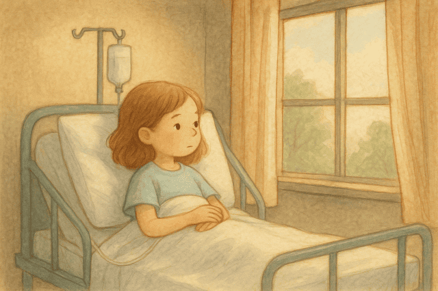

少女とあなたの物語
その少女の名前は美月。長い間、原因不明の病気と闘い続けていました。
白い病室の窓から見える空を眺めながら、彼女はいつも夢想していました。
「ねぇ、あの雲の向こうには何があるのかな？」
美月はぼんやりとした目で空を見上げ、そうつぶやきます。
ある夜、あなたは不思議な光に導かれるように、美月の夢の中に迷い込みました。
そこは彼女の記憶と願いが混ざり合った、現実とも幻想ともつかない世界。
しかし、この夢の世界には「おかしなところ」があります。
美月の意識が弱まるにつれ、夢の世界の境界線が曖昧になり、現実の記憶が歪んでしまったのです。
「この世界のおかしなところを直していかないと、美月は永遠に夢の中に閉じ込められてしまうかもしれない…」
そんな予感がした瞬間、あなたの前に最初の部屋が姿を現しました。
美月の大切な思い出が詰まった「思い出のリビング」です。